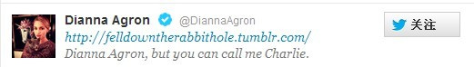
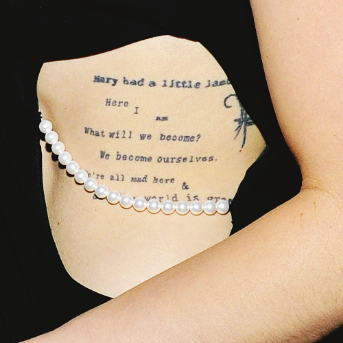

5. Wonderland
TS登上2012年10月刊的滚石杂志封面，滚石官网上文章标题是Taylor Swift in Wonderland；
TS在2013年2月格莱美以Alice in Wonderland为主题开场唱了WANEGBT，在之后的RED巡演中，压轴曲WANEGBT的舞台、服装主题还是Alice in Wonderland；
TS之后写了Wonderland；
2010年电影版< Alice in Wonderland >的主题是：I found myself
1989的主题是：She found herself
豆瓣上有2则电影影评可以作为参考阅读：
对TS来说，她自己就是Alice，她去过Wonderland，又回到现实，失去所爱，却找回自己。
2012、2013年她身上有很多Wonderland的痕迹，到了2015年Wonderland却成为唯一一首没有被录入1989 live官方视频的歌，她就像离开了Wonderland的Alice，面对新生活不再迷茫也不再回头。
掉进兔子洞的不止TS，她是跟着另一个人一起跳进去的。
DA有个用了4年的Tumblr账号：felldowntherabbithole，掉进兔子洞
2013年4月23，在媒体爆料TS和DA的关系后，DA关闭了Tumblr，她关闭前写了最后一段话

This will be the last post here…
Dear Tumblr. I think it's time to lay you to rest. A lovely friend you've been. Thank you friends for following the journey. But as an old chapter close, a new chapter begins. X Di
现在访问她已经关闭的Tumblr还能看到Tumblr留在她主页上的告别语
Thank You Dianna
For 4 years we followed you down the rabbit hole and now it's time for the next adventure.
Thank you for all the memories, mystery and magic.
TS在Wonderland中写着
Flashing lights and we took a wrong turn
And we fell down the rabbit hole
DA曾经列出一份让她鼓舞的人和让她快乐的事
名单中有TS
其中有new和excitement
TS在Wonderland中写着
Didn't it all seem new and exciting?
I felt your arms twisting around me
DA身体左侧腰部附近有这么几个纹身
最上面的Mary had a little lamb是在2010年
下面的这几个是2011年
Here I Am
What will we become?
We become ourselves
We're all mad here &
All the world is green
DA很喜欢Alice in Wonderland，她Tumblr账号是fell down the rabbit hole，身上还有We're all mad here的纹身
TS在Wonderland中写着
we fell down the rabbit hole
Didn't you flash your green eyes at me?
Didn't you calm my fears with a Cheshire cat smile?
And in the end in Wonderland
We both went mad
有人说HS出生地是Holmes Chapel, Cheshire, England，TS的23岁生日是和HS在他老家Cheshire过的，而且HS有绿眼睛，所以这个Cheshire cat smile是指HS，Wonderland是写给HS的
但实际呢，看过Alice in Wonderland的都知道Cheshire cat是这故事中的一个著名角色，就是这位
是不是很眼熟
2014年10月21号，TS在Tumblr上转发了这么一条
{kind=link}
左边是Cheshire cat和它的经典台词We're all mad here，右边是她自己为Wonderland手写的一段歌词，着重标出了we both went mad（大图看本节最后）
粉丝找出Wonderland与Alice in Wonderland之间的关联，表示这是本周的"Swifties are the worst detectives ever"（ 可以理解为Tumblr上的一个tag，类似于，霉粉侦探们找出TS的新提示、新线索、新解读）
TS转发时说"I live for these moments"，粉丝们能从她歌词中找出她本意是她最开心的时刻。
TS在Wonderland中写着
So we went on our way too in love to think straight all alone or so it seemed
too … to … 太…而不能… 的句式，让我想起一部百合片I Can't Think Straight，同样都是一语双关，可以理解为无法清醒思考问题，也可以理解为无法再“直”的思考。
{kind=link}
在I Know Places的歌词中写着
I can hear them whisper as we pass by
It's a bad sign, bad sign
I Know Places的隐藏信息是
And everyone was watching
在1989中，能与隐藏之爱IKP呼应的还是Wonderland
But there were strangers watching and whispers turned to talking and talking turned to screams
几个与TS有关的Alice in Wonderland中的经典台词
1. We're all mad here
Alice in Wonderland中最著名的台词发生在Alice与Cheshire Cat的对话间，咧嘴笑着的Cheshire Cat给Alice指引，告诉她森林各个方向都住着什么类型的人。然后它告诉Alice这个结论："We're all mad here"
in the woods，让我联想到out of the woods，还是一语双关，既是走出困境，也是离开Wonderland走出这个森林。
2. Who in the world am I? Ah, that's the great puzzle

“我是谁？我究竟是一个怎样的人？”这是每个人的终极疑问
“找到自我”也是Alice in Wonderland的主题
TS最后找到了答案
{kind=link}